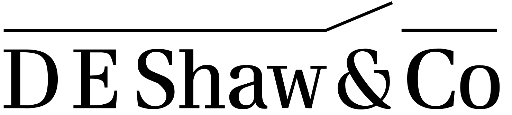

Experience
Network Architect | Intern
June 2024 - August 2024
Los Gatos, CA, USA
Actively developed and executed test plans that exercise existing and proposed network solutions
for Netflix's network backbone, Corporate offices, creative production workflows, and data center networks.
Network Engineer | Lead Tech Associate

December 2022 - May 2023
Hyderabad, TG, India
Managed Tier 3 Network operations, resolving critical issues and conducting root cause analysis. Analyzed, identified, and rectified production environment issues, optimizing network reliability. Led incident analysis and resolution, ensuring timely service restoration. Redesigned and upgraded network infrastructure to enhance stability and performance.
Site Reliability Operations Engineer | Senior Tech Associate
December 2021 - December 2022
Hyderabad, TG, India
Oversaw Tier 2 Networking and Linux operational support, elevating overall supportability. Mentored 3 System Administrators, developing subject matter experts in networking. Implemented alerting changes for streamlined operational tasks. Managed 100% Network and 50% Linux operational escalations from Network Operation Center and Helpdesk teams. Achieved a remarkable reduction in Networking operational escalations to Network Engineering team, reaching 0%.
System Administrator | Tech Associate
July 2019 - December 2021
Hyderabad, TG, India
Provided Tier 1 Helpdesk operations and subject matter expertise in Networking. Coordinated with internal teams for quick incident resolution and service restoration. Monitored and addressed critical infrastructural issues, ensuring optimal trading support. Mentored and developed technical skills of mentee, fostering growth and relationship.